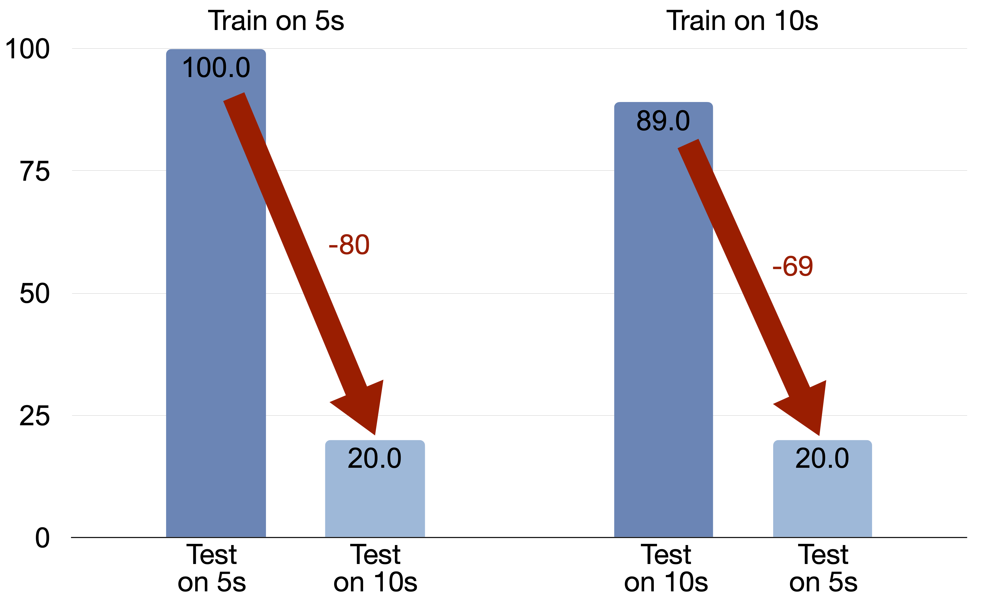

Introduction
Human vision operates as a continuous perceptual process: we experience the world through an uninterrupted stream of visual input, gradually accumulating evidence, establishing correspondence over time, and forming holistic, persistent representations of dynamic scenes (top of Figure 1). This ability to integrate information across time is central to human visual intelligence, allowing us to track objects, reason about occlusions, and maintain stable scene understanding despite fragmentary views at any moment.
In contrast, contemporary vision-language and multimodal models process videos in a fundamentally different manner. Most existing architectures treat a video as a collection of separated frames, extracting features independently and aggregating them with shallow temporal modules (bottom of Figure 1). As a consequence, these systems tend to rely on texture-based shortcuts and momentary visual cues, resulting in fragmented and superficial video understanding. Despite rapid progress in video benchmarks and large-scale multimodal training, it remains unclear whether current models can perform the kind of continuous, stream-based perception that humans naturally employ.

Figure 1: Human perception (top) operates on a continuous visual stream, which enables a holistic and deep understanding of spatio-temporal events. In contrast, dominant AI models (bottom) employ a separate frames paradigm, processing sparse, discrete snapshots. We argue this leads to a fragmented and superficial understanding that fundamentally fails to capture true spatio-temporal continuity.
To reveal this blind spot, we introduce the Continuous Perception Benchmark (CP-Bench), a deliberately minimalistic yet diagnostic evaluation of a model’s ability to integrate visual information over time.
Each video consists of visually identical cubes placed on a plane, rendered with CLEVR-style physics and appearance, while a camera moves horizontally across the scene. At any moment, only a subset of cubes is visible, and the task is simply to count the total number of cubes. Because all cubes share identical shape, color, and texture, the task cannot be solved by single-frame appearance cues; instead, it inherently requires continuous perception for maintaining object permanence, aligning observations across frames, and constructing a global scene representation.
Although CP-Bench is conceptually simple, our experiments reveal that it exposes a fundamental limitation of current multimodal systems. We evaluate a wide range of state-of-the-art open-source and proprietary models, and find that none can reliably solve the benchmark. These findings collectively suggest that current video-language architectures lack the mechanisms required for continuous, time-consistent perception. Our results point toward the need for new architectures and training paradigms explicitly designed to model continuous spatiotemporal processes. We hope that CP-Bench serves as a foundation for future research toward truly human-like video understanding.
Continuous Perception Benchmark (CP-Bench)
CP-Bench is built on the CLEVR dataset, using Blender to render synthetic scenes. Each scene consists of a static planar surface populated by a set number of cubes. All cubes share identical appearance, i.e are identical in shape, color, size, material, and texture. This is a critical design choice made to eliminate texture-based shortcuts and prevent recognition based on superficial visual cues. The virtual camera performs a single, smooth horizontal panning motion across the scene over a duration of 10 seconds. The camera's field of view is constrained, ensuring that only a subset of the total cubes is visible at any given moment. All rendering parameters other than cube positions are kept constant across scenes. The task is to answer the question: "How many cubes are present in the scene?". The benchmark includes five object-count configurations: 3, 4, 5, 6, and 7 cubes. We generated 20 unique instances for each count, resulting in a balanced diagnostic set of 100 total video instances.
To further eliminate potential confounding factors and verify that model failures on CP-Bench are not attributable to low-level perceptual limitations, we design a control test set that preserves the exact visual appearance of the main benchmark while removing the need for continuous perception. In this control condition, the camera remains static, and all cubes are simultaneously visible in every frame. The control set contains the same five ground-truth object counts (3–7), with 20 instances per count, for a total of 100 test videos.
Experiment Results
Main Results
We evaluate several state-of-the-art models on our benchmark, including the Qwen-VL and InternVL series for open-source models, as well as GPT and Gemini for proprietary models. Test videos are sampled at 1 fps. A summary of the results is provided in the table below.
| Model |
GT=3 |
GT=4 |
GT=5 |
GT=6 |
GT=7 |
Overall |
Control |
$\Delta$ |
| InternVL2-8B |
30.0 |
0.0 |
0.0 |
0.0 |
0.0 |
6.0 |
41.0 |
$\downarrow$ 35.0 |
| InternVL2.5-8B |
25.0 |
0.0 |
0.0 |
0.0 |
0.0 |
5.0 |
58.0 |
$\downarrow$ 53.0 |
| InternVL3-8B |
30.0 |
0.0 |
0.0 |
0.0 |
0.0 |
6.0 |
79.0 |
$\downarrow$ 73.0 |
| Qwen2VL-7B |
30.0 |
60.0 |
65.0 |
20.0 |
15.0 |
38.0 |
58.0 |
$\downarrow$ 20.0 |
| Qwen2.5VL-7B |
25.0 |
80.0 |
45.0 |
35.0 |
15.0 |
40.0 |
86.0 |
$\downarrow$ 46.0 |
| Qwen3VL-8B |
35.0 |
65.0 |
20.0 |
20.0 |
10.0 |
30.0 |
82.0 |
$\downarrow$ 52.0 |
| GPT-5-Mini |
60.0 |
20.0 |
0.0 |
15.0 |
0.0 |
19.0 |
99.0 |
$\downarrow$ 80.0 |
| GPT-5 |
25.0 |
5.0 |
0.0 |
5.0 |
5.0 |
8.0 |
97.0 |
$\downarrow$ 89.0 |
| Gemini-2.5-Flash |
50.0 |
15.0 |
15.0 |
15.0 |
15.0 |
22.0 |
100.0 |
$\downarrow$ 78.0 |
| Gemini-2.5-Pro |
40.0 |
35.0 |
25.0 |
30.0 |
15.0 |
29.0 |
100.0 |
$\downarrow$ 71.0 |
| Gemini-3-Pro |
80.0 |
55.0 |
55.0 |
40.0 |
25.0 |
51.0 |
100.0 |
$\downarrow$ 49.0 |
None of the models are able to reliably infer the total number of cubes when continuous temporal integration is required. These results demonstrate that state-of-the-art multimodal systems, despite their impressive abilities on existing video benchmarks, lack the capacity for continuous perception. The dramatic accuracy drop compared to the control condition suggests that failure is not due to object recognition ability or difficulty in counting identical cubes. Rather, the models struggle to maintain object permanence, form temporally stable correspondences, and integrate sequential observations into a coherent global representation of the scene.
Does higher sampling FPS help?
To examine whether denser temporal sampling improves performance, potentially enabling models to approximate continuous perception by observing more frames, we conduct an additional experiment varying the input frame rate from 1 to 5 fps.
| Model |
FPS-1 |
FPS-2 |
FPS-3 |
FPS-4 |
FPS-5 |
| InternVL2-8B |
6.0 |
1.0 |
1.0 |
1.0 |
1.0 |
| InternVL2.5-8B |
5.0 |
5.0 |
5.0 |
5.0 |
5.0 |
| InternVL3-8B |
6.0 |
6.0 |
8.0 |
9.0 |
9.0 |
| Qwen2VL-7B |
38.0 |
41.0 |
41.0 |
34.0 |
22.0 |
| Qwen2.5VL-7B |
40.0 |
38.0 |
23.0 |
27.0 |
33.0 |
| Qwen3VL-8B |
30.0 |
12.0 |
11.0 |
7.0 |
8.0 |
Results show that increasing the frame rate does not meaningfully improve performance. This supports our central hypothesis: contemporary video models do not perform continuous perception, and increasing input density alone cannot compensate for this architectural and algorithmic limitation.
Finetuning on Synthetic Training Data
To further probe whether current models can learn continuous perception when provided with supervised data, we generate a synthetic training set that mirrors the structure of CP-Bench. Using the same rendering pipeline, we create 1,000 training videos: 200 instances for each ground-truth count from 3 to 7. All scenes strictly avoid overlap with test-set configurations, ensuring a clean separation between training and evaluation. We then finetune Qwen2.5-VL-7B for 5 epochs.
The finetuned model achieves 89% accuracy on the CP-Bench test set, which is significantly higher than the 40% accuracy of the original model. At first glance, this might suggest that the model has successfully acquired continuous perception capabilities. However, the extreme simplicity and uniformity of our setting raise the possibility that the model may have discovered shortcut strategies instead of learning to integrate information across time.
To distinguish true continuous perception from shortcut-based learning, we modify the training set by shortening video duration from 10 seconds to 5 seconds, effectively halving the camera’s traversal distance. The test set remains unchanged (10 seconds). If the model had learned a temporally generalizable perception strategy, then reducing training video length should not substantially impact test performance. However, under this setting, the finetuned model achieves only 20% accuracy on the 10-second test set, a drastic drop from the earlier 89%. We also perform the reverse experiment: training on 10-second videos and testing on 5-second videos. Again, the model achieves only 20% accuracy while training on 5-second achieves perfect accuracy.

This result reinforces our core thesis that current architectures and training paradigms fundamentally lack mechanisms for robust continuous perception. Notably, this train-test-generalization setup provides a simple testbed for distinguishing genuine continuous perception from superficial overfitting, facilitating development of models explicitly designed to maintain temporally cohesive representations. Ultimately, models that achieve true spatio-temporal reasoning should be capable of generalizing to arbitrarily long videos without performance degradation.
Conclusion
In this work, we argue that the prevailing paradigm of processing video as a collection of discrete, sampled frames is a fundamental barrier to achieving human-like visual intelligence. This approach leads to a fragmented and superficial understanding, in stark contrast to the holistic, continuous perception employed by humans. To empirically demonstrate this gap, we introduced the Continuous Perception Benchmark (CP-Bench), a minimalist diagnostic task where models must count visually identical objects in a panning video. This simple setup effectively neutralizes the texture-based shortcut solutions that many contemporary benchmarks permit, isolating the core capability of spatio-temporal correspondence. Despite the benchmark’s extreme simplicity, our experiments reveal that modern state-of-the-art multimodal models consistently fail on this trivially simple task.
We hope that this work opens a new research direction toward models capable of genuinely continuous perception, i.e., systems that track persistent structure in the world, accumulate information over time, and reason about scenes the way humans do. Achieving this capability will likely require innovations in architecture, memory, temporal modeling, and training methodology. CP-Bench offers a stepping stone toward that goal, highlighting both the limitations of current approaches and the opportunities for progress in building physically grounded, temporally coherent multimodal intelligence.
Difference in perceiving video vs. individual frames. The two modes of viewing lead to very different levels of understanding. Examining isolated frames requires constant back-and-forth comparison to establish correspondence, whereas watching a continuous video allows this correspondence to emerge naturally and effortlessly. Current multimodal models process videos more like the disjointed frames on the right, rather than like humans who perceive the smooth, continuous stream on the left.
@article{cpbench2025,
title={Continuous Perception Matters: Diagnosing Temporal Integration Failures in Multimodal Models},
author={Zeyu Wang and Zhenzhen Weng and Serena Yeung-Levy},
journal={arXiv preprint arXiv:2408.07867},
year={2025}
}